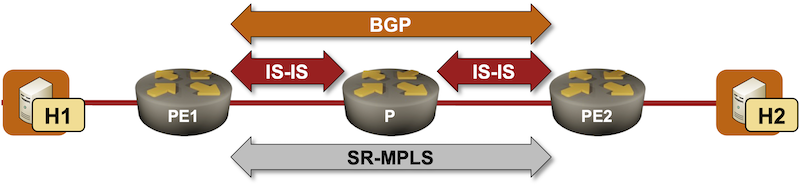

Build an SR-MPLS Network with IS-IS
Segment Routing with the MPLS dataplane is the best (control-plane) thing that has happened to MPLS in decades. Instead of building a forwarding table and then assigning local MPLS labels to the entries in the forwarding table, SR-MPLS advertises MPLS labels (called Segment Identifiers) directly in IGP. This approach completely eliminates the need for an additional control-plane protocol (LDP) and the synchronization headaches LDP introduces.
In this lab exercise, you’ll build a BGP-free network core with segment routing (see the BGP-Free Core in a Transit Network lab exercise for a more traditional approach).

Expert
This is an expert-level challenge lab – you are on your own. Good luck and Godspeed!
Device Requirements
- Use any device supported by the netlab IS-IS and BGP configuration modules for the routers in your lab. The device should also support SR-MPLS with IS-IS
- I recommend using a traditional networking device like Arista EOS. Configuring the MPLS data plane on a Linux container running FRRouting control plane can become an interesting exercise in tweaking underdocumented Linux kernel knobs.
- The hosts (H1, H2) attached to the PE-routers are Linux VMs or containers (depending on the virtualization provider you’re using). You don’t have to worry about them; netlab will handle that detail.
Starting the Lab
You can start the lab on your own lab infrastructure or in GitHub Codespaces (more details):
- Change directory to
advanced/10-sr - Execute netlab up.
- Log into lab routers with netlab connect and verify their configuration.
Tip
Use Arista EOS containers with GitHub Codespaces. You won’t be able to load the kernel drivers needed by FRRouting or VyOS containers, and SR Linux containers need a license to run MPLS.
Existing Routing Protocol Configuration
When starting the lab, netlab configures IPv4 addresses, IS-IS, and BGP on the lab routers.
The PE-routers use the following BGP AS number. Both of them advertise the external (host-facing) subnets into BGP.
| Node/ASN | Router ID | Advertised prefixes |
|---|---|---|
| AS65000 | ||
| pe1 | 10.0.0.1 | 172.16.0.0/24 |
| pe2 | 10.0.0.3 | 172.16.1.0/24 |
Each PE-router has a single IBGP neighbor (the other PE-router):
| Node | Router ID/ Neighbor |
Router AS/ Neighbor AS |
Neighbor IPv4 |
|---|---|---|---|
| pe1 | 10.0.0.1 | 65000 | |
| pe2 | 65000 | 10.0.0.3 | |
| pe2 | 10.0.0.3 | 65000 | |
| pe1 | 65000 | 10.0.0.1 |
All routers are running IS-IS on intra-AS links. They are configured as level-2 routers using point-to-point links.
The Problem
After the IS-IS and BGP adjacencies are established, PE1 receives the BGP prefix for the external subnet advertised by PE2 (and vice versa):
BGP table on PE1 running Arista EOS
pe1#show ip bgp
BGP routing table information for VRF default
Router identifier 10.0.0.1, local AS number 65000
Route status codes: s - suppressed contributor, * - valid, > - active, E - ECMP head, e - ECMP
S - Stale, c - Contributing to ECMP, b - backup, L - labeled-unicast
% - Pending best path selection
Origin codes: i - IGP, e - EGP, ? - incomplete
RPKI Origin Validation codes: V - valid, I - invalid, U - unknown
AS Path Attributes: Or-ID - Originator ID, C-LST - Cluster List, LL Nexthop - Link Local Nexthop
Network Next Hop Metric AIGP LocPref Weight Path
* > 172.16.0.0/24 - - - - 0 i
* > 172.16.1.0/24 10.0.0.3 0 - 100 0 i
However, you can’t ping H2 from H1:
$ netlab connect h1 ping h2
Connecting to container clab-sr-h1, executing ping h2
PING h2 (172.16.1.5): 56 data bytes
^C
--- h2 ping statistics ---
6 packets transmitted, 0 packets received, 100% packet loss
A traceroute executed on H1 indicates that the probe packets arrive at PE1 and then get dropped by the P router. You shouldn’t be surprised by that behavior; the P router is not running BGP and does not know how to reach the external subnets to which H1 and H2 are connected.
$ netlab connect h1 traceroute h2
Connecting to container clab-sr-h1, executing traceroute h2
traceroute to h2 (172.16.1.5), 30 hops max, 46 byte packets
1 Ethernet1.pe1 (172.16.0.1) 0.004 ms 0.001 ms 0.001 ms
2 * * *
3 * * *
Configuration Hints
You must configure Segment Routing-based MPLS (SR-MPLS) transport across AS 65000 to hide transit traffic into an MPLS LSP. You would usually have to1:
- Enable MPLS dataplane and IS-IS segment routing on all routers
- Assign a Segment Identifier to the loopback prefixes of the PE-routers
Warning
- If you’re using FRRouting containers, execute
sudo modprobe mpls-router mpls-iptunnelbefore starting the lab. - You must use
sysctlcommands to enable MPLS on FRRouting interfaces (see FRRouting OSPF Segment Routing and FRRouting IS-IS Segment Routing documentation for more details).
Validation
Use a command similar2 to show isis segment-routing to verify that you successfully enabled SR-MPLS for IS-IS (Arista EOS refuses to enable it unless you also enable the MPLS dataplane).
IS-IS SR-MPLS status on PE1 running Arista EOS
pe1#show isis segment-routing
System ID: pe1 Instance: Gandalf
SR supported Data-plane: MPLS SR Router ID: 10.0.0.1
SR Global Block( SRGB ): Base: 900000 Size: 65536
Adj-SID allocation mode: SR-adjacencies
Adj-SID allocation pool: Base: 100000 Size: 16384
All Prefix Segments have : P:0 E:0 V:0 L:0
IS-IS Reachability Algorithm : SPF (0)
Proxy-node segment attached flag: ignored
Number of IS-IS segment routing capable nodes excluding self: 2
Self-Originated Segment Statistics:
Node-Segments : 1
Prefix-Segments : 0
Proxy-Node-Segments : 0
Adjacency Segments : 1
Check that the PE-routers advertise SR-MPLS TLVs in their LSPs:
Contents of PE2.00-00 LSP on PE1 running Arista EOS
pe1#show isis database pe2.00-00 detail
Legend:
H - hostname conflict
U - node unreachable
IS-IS Instance: Gandalf VRF: default
IS-IS Level 2 Link State Database
LSPID Seq Num Cksum Life Length IS Received LSPID Flags
pe2.00-00 5 45011 1024 149 L2 0000.0000.0003.00-00 <>
Remaining lifetime received: 1199 s Modified to: 1200 s
NLPID: 0xCC(IPv4)
Hostname: pe2
Area addresses: 49.0001
Interface address: 10.1.0.6
Interface address: 10.0.0.3
IS Neighbor : p.00 Metric: 10
IPv4 Neighbor Address: 10.1.0.5
IPv4 Interface Address: 10.1.0.6
Adj-sid: 100000 flags: [L V] weight: 0x0
Reachability : 10.0.0.3/32 Metric: 10 Type: 1 Up
SR Prefix-SID: 3 Flags: [N] Algorithm: 0
Reachability : 10.1.0.4/30 Metric: 10 Type: 1 Up
Router Capabilities: Router Id: 10.0.0.3 Flags: []
SR Local Block:
SRLB Base: 965536 Range: 65536
Area leader priority: 250 algorithm: 0
Maximum SID depth:
Base MPLS imposition (MSD type 1): 6
SR Capability: Flags: [I]
SRGB Base: 900000 Range: 65536
Tip
The labels (SIDs) advertised in SR-MPLS TLVs should be recognized by every node in the network; all devices within the network should be able to use the same set of labels. That’s so unrealistic that the IETF “solved” the problem with a Segment Routing Global Block (part of Router Capabilities TLV), allowing every node to use a different range of labels for the same SR-MPLS SID (more details).
It’s highly recommended that you use the same SRGB settings throughout the network; your future self will be grateful when troubleshooting an SR-MPLS problem at 2 AM.
You can also check the PE1 MPLS forwarding table.
Contents of MPLS forwarding table on PE1 running Arista EOS
pe1#show mpls route
MPLS forwarding table (Label [metric] Vias) - 2 routes
MPLS next-hop resolution allow default route: False
Metric Codes:
A - Active metric
Via Type Codes:
M - MPLS via, LP - LDP pseudowire via,
I - IP lookup via, V - VLAN via,
VA - EVPN VLAN aware via, ES - EVPN ethernet segment via,
VF - EVPN VLAN flood via, AF - EVPN VLAN aware flood via,
NG - Nexthop group via, BP - BGP pseudowire via,
VP - VPWS pseudowire via, MSP - Static pseudowire via
100000 A[1]
via M, 10.1.0.1, pop
EgressACL: apply
directly connected, Ethernet2
52:dc:ca:fe:02:01, vlan 1007
900003 A[1]
via M, 10.1.0.1, swap 900003
EgressACL: apply
directly connected, Ethernet2
52:dc:ca:fe:02:01, vlan 1007
Notice the label 9000033; it’s the label for the loopback address of PE2:
- PE-2 advertises an SR Prefix-SID 3 for IP prefix 10.0.0.3/32 (see above)
- Similar to PE-24, the P-router advertises SR Global Block starting at 900000
- PE-1 thus has to use label 900003 when sending packets towards 10.0.0.3/32 to the P-router.
Finally, check the IP forwarding table on PE-1. The BGP prefix 172.16.1.0/24 should have the MPLS label for the BGP next hop (PE-2 loopback interface):
BGP prefixes in the IP routing table on PE1 running Arista EOS
pe1#show ip route bgp
...
B I 172.16.1.0/24 [200/0]
via 10.0.0.3/32, IS-IS SR tunnel index 1
via 10.1.0.1, Ethernet2, label 900003
Last but definitely not least, let’s retry that failed ping:
$ netlab connect h1 ping h2
Connecting to container clab-sr-h1, executing ping h2
PING h2 (172.16.1.5): 56 data bytes
64 bytes from 172.16.1.5: seq=0 ttl=61 time=2.843 ms
64 bytes from 172.16.1.5: seq=1 ttl=61 time=2.450 ms
^C
--- h2 ping statistics ---
2 packets transmitted, 2 packets received, 0% packet loss
round-trip min/avg/max = 2.450/2.646/2.843 ms
Mission Accomplished 😎
Reference Information
Lab Wiring
| Origin Device | Origin Port | Destination Device | Destination Port |
|---|---|---|---|
| pe1 | Ethernet1 | h1 | eth1 |
| pe2 | Ethernet1 | h2 | eth1 |
| pe1 | Ethernet2 | p | Ethernet1 |
| pe2 | Ethernet2 | p | Ethernet2 |
Note: The interface names depend on the devices you use in the lab. The printout was generated with lab devices running Arista EOS.
Lab Addressing
| Node/Interface | IPv4 Address | IPv6 Address | Description |
|---|---|---|---|
| pe1 | 10.0.0.1/32 | Loopback | |
| Ethernet1 | 172.16.0.1/24 | pe1 -> h1 | |
| Ethernet2 | 10.1.0.2/30 | pe1 -> p | |
| p | 10.0.0.2/32 | Loopback | |
| Ethernet1 | 10.1.0.1/30 | p -> pe1 | |
| Ethernet2 | 10.1.0.5/30 | p -> pe2 | |
| pe2 | 10.0.0.3/32 | Loopback | |
| Ethernet1 | 172.16.1.3/24 | pe2 -> h2 | |
| Ethernet2 | 10.1.0.6/30 | pe2 -> p | |
| h1 | |||
| eth1 | 172.16.0.4/24 | h1 -> pe1 | |
| h2 | |||
| eth1 | 172.16.1.5/24 | h2 -> pe2 |
-
You could also cheat, add the sr module to all routers in the lab topology, and start the lab with SR-MPLS already configured. ↩
-
Use the Segment Routing Segment IDs and MPLS Labels and BGP-Free MPLS Core with Segment Routing blog posts for further inspiration ↩
-
The label depends on the SR Global Block advertised by the P-router (more details) ↩
-
Because I was running Arista EOS on both of them and did not change the SRGB configuration ↩